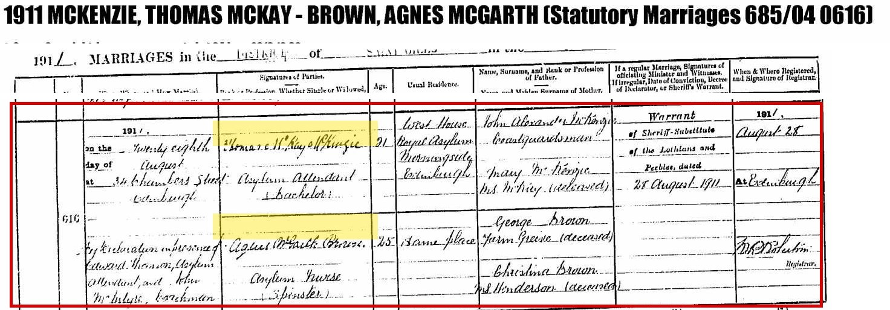

Marriage of Thomas McKay McKenzie and Agnes McGarth Brown, Edinburgh, 1911
Statutory register of marriages, District of St Giles, City of Edinburgh, 1911, page 308, entry 616 (685/04 0616). National Records of Scotland.

The entry is boxed in red and the names are highlighted. See the full page.

What it says
- Married: August 28, 1911, at 34 Chambers Street, Edinburgh, by declaration, under warrant of the Sheriff-Substitute of the Lothians and Peebles, dated August 28, 1911.
- Groom: Thomas McKay McKenzie, asylum attendant, bachelor, of West House, Royal Asylum, Morningside. Parents John Alexander McKenzie, coastguardsman, and Mary McKenzie, maiden surname McKay (deceased).
- Bride: Agnes McGarth Brown, 25, asylum nurse, spinster, same place. Parents George Brown, farm grieve (deceased), and Christina Brown, maiden surname Henderson (deceased).
- Witnesses: Edward Thomson, asylum attendant, and John McIntyre, coachman.
Why it matters
Four years after Laurence's birth, this places his mother at West House, the Royal Edinburgh Asylum, working as a nurse. Her parents' names match her own birth entry, so it is certainly the same Agnes. It is the last record of her under the name Brown.
Crown copyright, National Records of Scotland. Image from ScotlandsPeople.